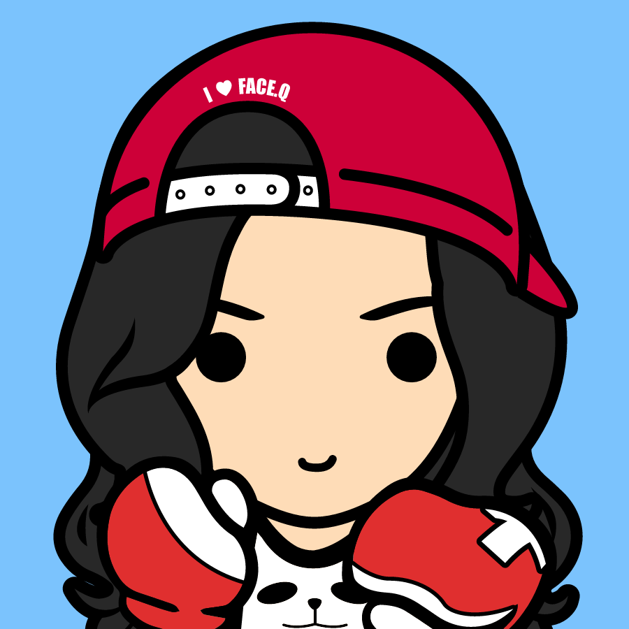
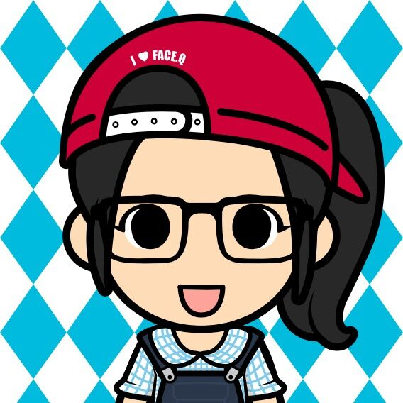

je'time
人英网络的核心是公司里的每一个员工。我们认为再好的理念如果不能付诸实施将它变为现实，也是毫无价值的。 因此，我们的团队聚集了一批来自世界各地10个国家志趣相投，充满热情，又待人友善的朋友。看重员工的技术造诣并鼓励员工的自我发展，这就是我们。这里有我们最初的梦想，这里为你讲述故事的开始…… 2004年，我们的第一个德语社交网站在上海的一间小公寓内诞生，它的成功也为人英网络的成立奠定了基础。历时五年的研究和实验，我们提炼出一套完美稳固的开发框架，并在其基础上顺利地建造推出了了第二个大型德语社交网站。这一切曾经在我们看来不可能完成的任务，现在得以完成与实现。 这是一支井井有条、稳步发展的团队，他们在Scrum开发流程中玩转与各种新颖的网页开发技术，每个Sprint都完美地计划、高效地执行各项Story，不断推出炫酷的网站新功能。在我们看来，这也是一支雄心勃勃的团队，就在不久前成功打响了多语言社交网的第一枪，他们励志要在国际市场里刮起一股日耳曼旋风！

